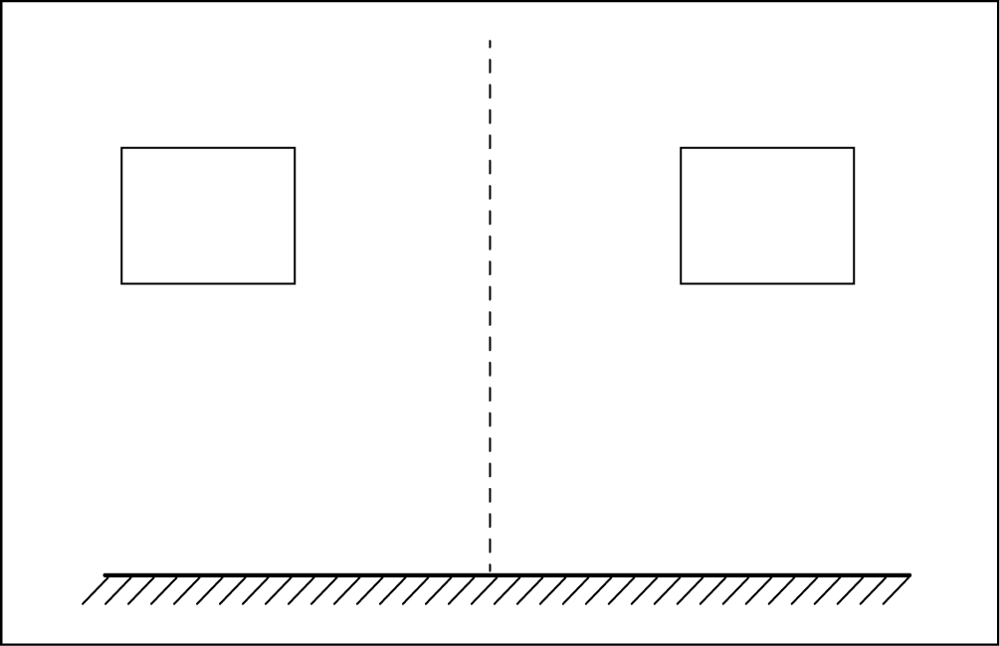
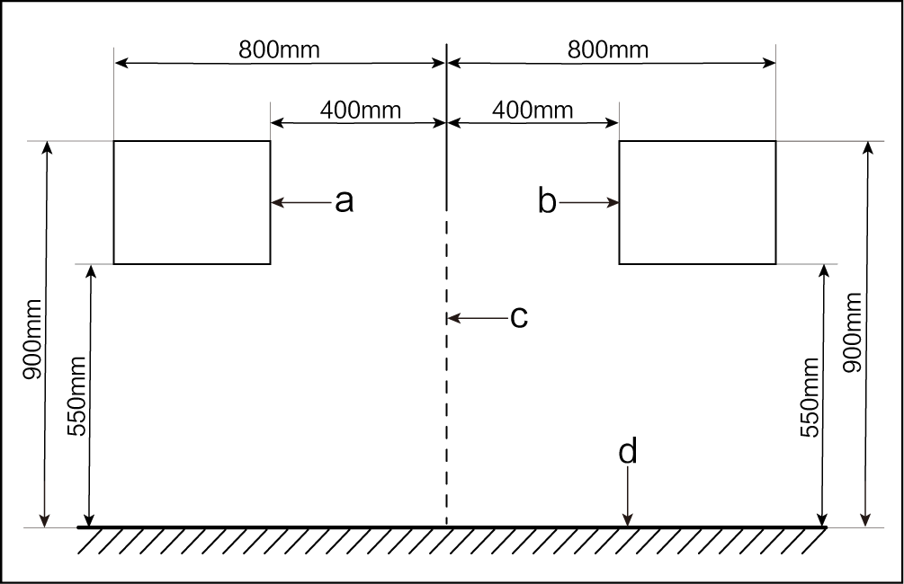
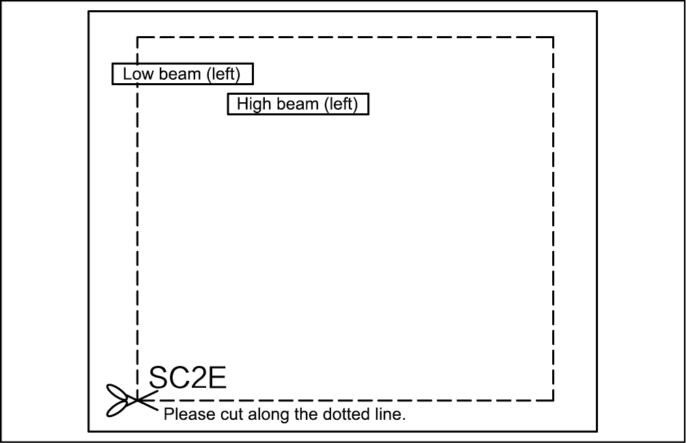
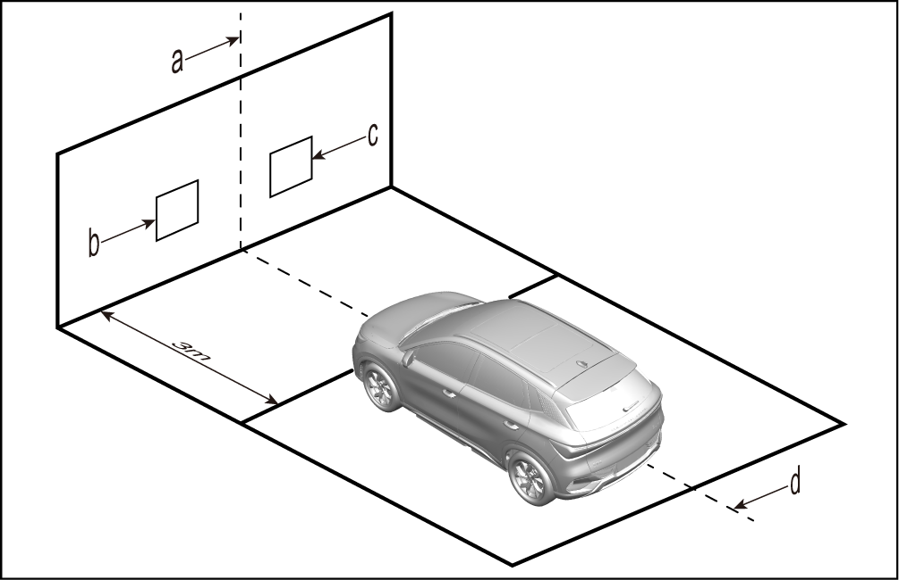
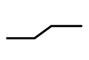
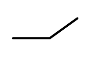
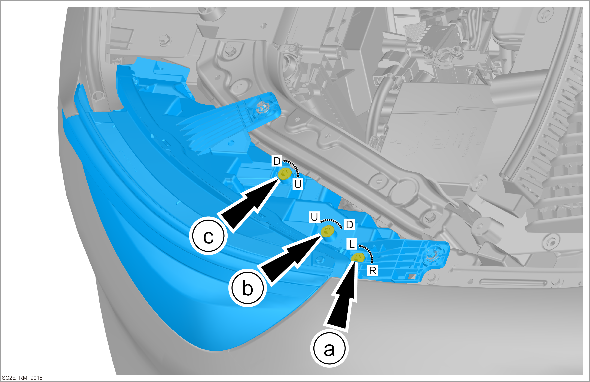

Inspection and Adjustment of Headlight (Dimming Test Paper)
Repair tools and equipment required
-
VDS
-
Dimming test paper

Preparation of test screen
-
Use a 1.2 m (height) × 2 m (width) wall or whiteboard to make the test screen. Draw a longitudinal centerline (corresponding to the vehicle) and test paper position boxes on the wall or whiteboard.
 -
The requirements for dimensions of the centerline and the test paper position box are as follows:
S/N Name S/N Name a Left position box c Vehicle centerline b Right position box d Ground 
Preparation of test paper
-
Print the test paper on an A2 (420 mm × 594 mm) paper in a professional print shop.
-
Cut the printed test paper along the dotted line and laminate it.
Reminder-
The methods for the left and right sides are the same. Take the left one as an example.
-
When printing, it must be printed in 1:1 scale, and the left and right light dotted line boxes are 400mm × 350mm, measure whether the size is correct after printing.
-
Attach the test paper to the corresponding position box of the test screen. After use, put it in a folder or file bag, and properly keep it in the spare parts warehouse.
 -
Preparation of inspection site
-
Make sure that the inspection site is flat and spacious, and avoid the influence of strong light irradiation on dimming.
-
Draw a straight line parallel to the test screen on the ground 3 m away from the test screen, draw the vehicle centerline on the ground, and make sure that the centerline is perpendicular to the 3 m line and the test screen.
S/N Name S/N Name a Vehicle centerline c Right position box b Left position box d Vehicle centerline 
Preparation of vehicle under test
-
Check and make sure that there is no damage or deformation of the vehicle and around the headlights.
-
Ensure the headlight glass is not damaged or dirty, and the reflector and lights are normal.
-
Make sure that the vehicle lubricating oil level and the coolant level meet the design requirements.
-
Make sure that the tire pressure meets the standard inflation pressure requirement.
-
Never place other articles in the vehicle, but be sure to place the tools delivered with the vehicle at the specified positions.
-
Have a person weighing 75 kg seated in the driver's seat (counterweight method is allowed if the weight is below 75 kg).
-
Place the vehicle on a horizontal plane and shake the vehicle body from side to side to make the chassis suspension of the vehicle stay in a stable state.
-
Before you dim the lights, make sure the headlight adjusting switch is set to “0” if the vehicle has a dimming switch. If the vehicle does not have a dimming switch (automatic dimming), look at the instrument panel and see if the light MIL is on or blinking. If it is, you need to service it and report the feedback. If it is not, you need to use a VDS to reset it.
-
Connect the VDS and enter the diagnostic system interface.

-
Power on the vehicle (OK mode).
-
Enter the following menu: Model diagnosis/(corresponding model code)/Body module/Headlight adjustment unit/Headlight initialization
Adjustment steps

-
For a model with joint adjustment of high and low beams, only low beams need to be adjusted.
-
The shape of low beam light has 2.They are  and .Lower inflection point of cut-off line is optical center of low beam.The optical center of high beam is brightest point.
-
If low beams need to be shielded for adjusting high beams, headlight surfaces cannot be directly shielded or the shielding time cannot exceed 2 minutes as headlight covers are made of plastic, so as to avoid gathering of heat that may cause burn-out of headlight covers.
-
During light adjustment, observe beam positions while rotating the adjusting bolt. Make proper adjustment at one time whenever possible. Refrain from continuous and prolonged rotation of the adjusting bolt with an electric screwdriver to prevent need for subsequent readjustment caused by excessive adjustment.
-
Adjust the light inflection point to the test box center whenever possible.
-
Attach the test paper of the corresponding model to the position box (for a wall, it is recommended to use a paper tape; for a whiteboard, it is recommended to use a magnet).
-
Park the vehicle in front of the 3 m line, that is, the low beam reference center (the intersection point between the low beam bulb axis and the light cover) is 3 m away from the test screen. In addition, keep the vehicle centerline overlapping with the vehicle centerline drawn on the ground and vertically aligned with the centerline on the test wall.
-
Check that the light pattern centers of headlights are in the corresponding test boxes. If so, headlights are normal. If not, adjust headlights.
-
Adjust the headlight cluster assembly.
ReminderThe adjustment method of left headlight cluster is the same as the right one. Take the left one as an example.
-
Before adjustment, remove the left trim panel assembly of front compartment.
-
Adjust the light source in horizontal direction.
-
Adjust the low beam light source in vertical direction.
-
Adjust the high beam light source in vertical direction.
ReminderAdjustment of light sources in horizontal and vertical directions refers to adjusting the irradiation range and distance of light sources of the headlight cluster assembly.
Letter Descriptions Letter Descriptions L Left U Up R Right D Down -
Dimming parameter table
| A | B | H | Adjustment form | Type of cut-off line |
|---|---|---|---|---|
| 1520 | 1296 | 868 | Manual, joint adjustment |
-
A: distance between centers of low beams.
-
B: distance between centers of high beams.
-
H: height of the low beam reference center above the ground.
-
Manual: manual adjustment of high and low beams.
-
Automatic: automatic adjustment of low beams and manual adjustment of high beams.
-
Joint adjustment: low and high beams moving simultaneously during adjustment.
-
Independent: low and high beams moving independently during adjustment.
-
Unit: mm.